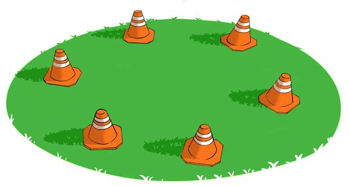
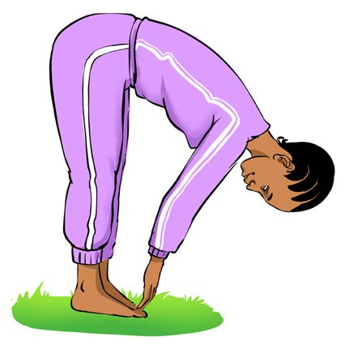

How to practise
1.
Arrange the cones in a circular pattern in an open space at a distance of 3 to 5 steps from one cone to another, as shown in Figure 1;

Figure 1: Six cones arranged in circular form
2.
Be in pairs or groups, each group starting at a different cone;
3.
After the command of the leader, start the rotation by doing one of the chosen flexibility exercise at each cone; and
4.
After completing all the cones, return to the starting point.
Some exercises to be done at each cone
1.
Stretching the back of the body:
(a)
Stand beside the cone and bend down to touch the toes, as shown in Figure 2; and
(b)
Hold it for 10 to 15 seconds.

Figure 2: A pupil stretching the back by touching the toes